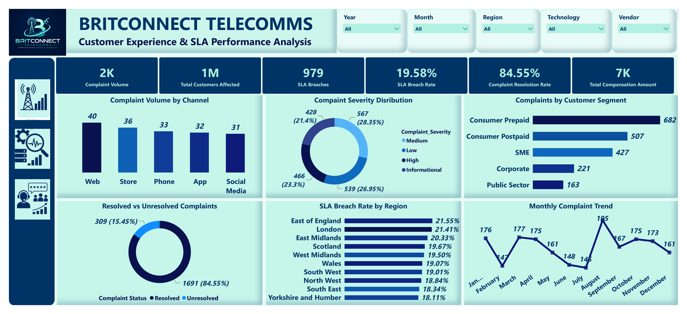
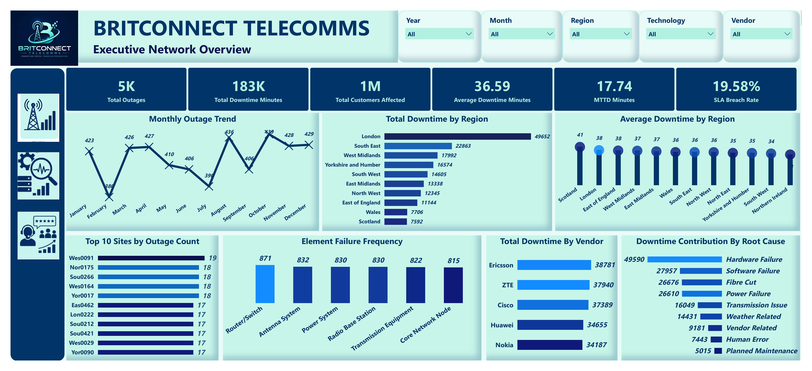
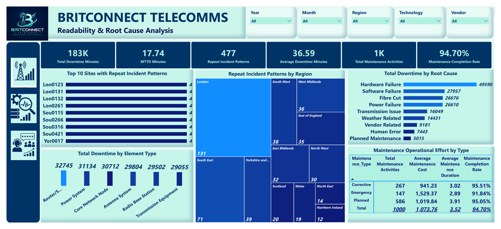

Project Overview
In telecommunications, a network outage is more than a technical disruption. It can interrupt essential communication, affect customers across multiple locations and place pressure on a provider's ability to meet its service commitments.
This project examines BritConnect's telecommunications operations to understand where service disruptions occur, which equipment and recurring incidents contribute to operational pressure, and how network performance relates to customer complaints and SLA compliance.
Using Microsoft SQL Server and Power BI, I analysed network outage records, alarm detection, equipment failures, maintenance activities, vendor performance and customer service data. The analysis was developed into three interactive dashboards covering Executive Network Performance, Reliability and Root Cause Analysis, and Customer Experience and SLA Performance.
The objective was to look beyond the number of outages and understand their wider operational consequences. This included examining how long disruptions lasted, how quickly incidents were detected, which locations experienced repeated problems and where customers were most exposed to service failures.
The findings provide management with a structured basis for prioritising engineering attention, reviewing maintenance practices and improving service reliability.
01. Executive Network Performance Overview
This dashboard provides an executive-level assessment of network reliability, combining outage frequency, downtime, customer impact, incident detection, SLA performance and regional network conditions.
Its purpose is to help management understand the overall scale of network disruption and identify which areas deserve closer operational investigation.

Key Business Findings
The dashboard records approximately 5,000 network outages, generating more than 183,000 minutes of total downtime. Across these incidents, the dataset reports approximately one million customer-impact records.
These figures demonstrate the scale of disruption recorded within the network. However, outage frequency alone does not explain the full business impact. Two regions may experience similar numbers of incidents but have very different downtime durations and levels of customer exposure.
Average downtime was 36.59 minutes per outage. This provides a useful baseline for understanding how long incidents typically lasted, although the average may conceal a smaller number of unusually long disruptions.
The Mean Time to Detect (MTTD) was 17.74 minutes. This measures the average elapsed time between the start of an incident and its detection in the underlying alarm records.
From an operational perspective, detection time matters because engineering teams cannot begin an informed response until a problem has been identified. The figure therefore provides a starting point for reviewing alarm monitoring and incident identification processes.
The SLA breach rate was 19.58%, meaning that approximately one in five recorded outages did not meet the applicable service-level requirement. This is a significant management consideration because service reliability must be evaluated against the commitments made to customers, not simply the number of incidents closed.
The monthly trend shows fluctuations in outage activity, with August recording the highest monthly count at approximately 455 incidents. The variation suggests that network reliability was not completely consistent throughout the reporting period.
However, the trend alone does not establish why August experienced more incidents. Further investigation would be required to determine whether equipment conditions, planned work, weather or other operational factors contributed to the increase.
The regional analysis reveals another important distinction. London generated the highest total downtime, at approximately 49,652 minutes, while Scotland recorded the highest average downtime per outage, at around 41 minutes.
This comparison shows why total downtime and average incident duration should not be interpreted in the same way. London's result highlights its overall contribution to downtime, whereas Scotland's result suggests that individual incidents there tended to last longer.
The equipment and root-cause comparisons provide further direction for engineering review. Router-related equipment appears among the most frequently affected network elements, while hardware failures contribute the largest share of total downtime.
The vendor comparison also shows differences in total downtime across suppliers. These totals can help identify where further review may be useful, but they should not be used to rank vendor quality without considering the number of assets supported, network exposure and incident severity.
Overall, the dashboard establishes that improving network reliability requires attention to incident frequency, duration, detection speed and customer exposure rather than any single KPI.
Management Considerations
Management should prioritise locations and equipment contributing the greatest operational disruption, while separately investigating regions with longer average incident durations.
Alarm detection performance should be reviewed to determine whether monitoring rules, alert routing or incident identification processes can be improved.
Regional and vendor performance should also be assessed using normalised measures, such as downtime per asset or incident rates relative to network size, before drawing conclusions about comparative reliability.
02. Network Reliability & Root Cause Analysis
This dashboard examines the operational conditions behind network disruption. It brings together equipment failures, root causes, repeated incident patterns, maintenance activity and regional reliability indicators.
The purpose is to move beyond identifying where outages occur and investigate which recurring problems may require more permanent engineering solutions.

Key Business Findings
The analysis identifies 477 repeat incident patterns, highlighting recurring combinations of network problems within the recorded data. This is an important finding because repeated incidents may indicate that the underlying operational issue has not been fully addressed.
An incident can be restored successfully without the underlying fault being permanently eliminated. Where similar problems reappear, the business may continue to incur engineering effort, downtime and customer disruption.
The equipment analysis shows that router-related elements are among the most frequently affected components. Hardware failures also make a substantial contribution to recorded network downtime.
These findings suggest that equipment condition and failure recurrence deserve closer investigation. However, high failure counts do not automatically establish that a particular equipment type is inherently unreliable. The number of installed assets and their operating conditions must also be considered.
The root-cause breakdown distinguishes hardware failures from software, power, transmission, fibre and other recorded causes of disruption.
This distinction is useful because different fault categories require different operational responses. For example, recurring hardware faults may warrant asset inspection or replacement, while software-related incidents may require configuration review, testing or vendor support.
The maintenance analysis indicates an overall completion rate approaching 95%, suggesting that most recorded maintenance activities were completed.
This is a positive operational indicator, but maintenance completion should not be confused with maintenance effectiveness. Completing a scheduled activity does not necessarily mean that future failures have been prevented.
The comparison of planned and emergency maintenance also deserves attention. Emergency work is associated with greater operational urgency and, in the dashboard comparison, higher average maintenance costs than planned activity.
This provides a reason to investigate whether recurring emergency work could be reduced through more targeted preventive maintenance. It does not, by itself, prove that additional planned maintenance would automatically reduce costs.
The regional repeat-incident comparison helps identify where similar problems continue to occur. These patterns can support engineering prioritisation, particularly when repeat frequency is considered alongside downtime duration and customer exposure.
The wider business implication is that network reliability should be managed through both incident restoration and longer-term fault prevention.
A team may respond quickly to individual incidents, but if the same faults continue to return, the network remains exposed to avoidable operational pressure.
Management Considerations
Engineering teams should establish a focused review of recurring incident patterns, starting with locations and equipment showing repeated faults alongside substantial downtime.
Preventive maintenance priorities should be informed by failure history, asset condition, service criticality and the cost of disruption.
Management should also compare planned and emergency maintenance outcomes, including repeat failure rates after intervention, rather than relying on maintenance completion rates alone.
For recurring high-impact faults, a documented root-cause review and follow-up verification would help establish whether corrective action has delivered a lasting improvement.
03. Customer Experience & SLA Performance
The final dashboard examines the customer-facing consequences of network service disruption. It brings together customer complaints, complaint resolution, SLA breaches, customer segments, communication channels and compensation exposure.
Its purpose is to understand how operational reliability relates to service experience and where improvements may be needed to protect customer confidence.

Key Business Findings
The dashboard analyses approximately 2,000 customer complaints alongside the wider network outage and SLA performance records.
The network recorded 979 SLA-breaching incidents, equivalent to a breach rate of 19.58%. This provides a measurable indication of the proportion of outages that did not meet the applicable service commitments.
From a customer perspective, service-level breaches matter because they represent a failure to meet the agreed standard of service. The potential consequences include dissatisfaction, additional support demand and compensation exposure, depending on the terms of the service agreement.
The complaint-resolution analysis shows that approximately 85% of complaints were resolved, while around 15% remained unresolved.
The resolved share is encouraging, but the unresolved cases still represent customers whose concerns may require further attention.
Complaint closure should also be considered alongside resolution time and customer satisfaction. A complaint marked as resolved does not necessarily establish that the customer was satisfied with the outcome.
The channel comparison shows that the Web channel generated the highest recorded complaint volume, followed by Store and Phone.
This distribution is useful for support capacity planning, but it should not automatically be interpreted as customer channel preference. Channel availability, ease of access and the number of customers using each channel may influence the totals.
Consumer Prepaid accounts for the highest recorded complaint volume among the displayed customer segments.
This suggests that the segment deserves closer service review. However, its complaint volume should be compared with the size of its customer base before concluding that prepaid customers experience disproportionately poor service.
The regional SLA analysis identifies East of England as having the highest displayed breach rate. This is important because a region with a high percentage of breached incidents may require attention even when its total outage volume is not the largest.
The monthly complaint trend shows September as the highest recorded complaint month. This can guide a more detailed review of the incidents, customer segments and service conditions associated with that period.
The compensation analysis adds a financial dimension to customer experience. Although compensation does not capture the full cost of poor service, it provides an additional measure of exposure associated with service commitments.
The relationship between network disruption and customer complaints should be investigated carefully. The dashboards show patterns in both operational and customer service records, but a direct causal link between specific outages and individual complaints requires incident-level matching and validation.
Overall, the dashboard demonstrates why network performance should not be assessed exclusively through technical KPIs. Customer outcomes provide an equally important perspective on the quality of service being delivered.
Management Considerations
Management should prioritise regions and customer segments showing elevated SLA breach or complaint exposure, using rates relative to the relevant customer or incident population.
Unresolved complaints should be reviewed by age, severity and underlying issue to identify cases requiring urgent follow-up.
Customer service teams should also assess whether communication during outages is timely, consistent and clear.
Where the data permits, linking complaints to specific outage incidents would help management understand which types of network disruption generate the greatest customer impact.
Overall Business Conclusion
The BritConnect analysis reveals that network reliability is not simply a question of how many outages occur. The duration of those outages, the speed of detection, the recurrence of faults and the number of customers exposed all influence the operational consequences.
The Executive Network Overview establishes the scale of disruption, with approximately 5,000 outages, 183,000 downtime minutes and a 19.58% SLA breach rate.
The Reliability and Root Cause dashboard adds an explanation of where recurring operational problems are concentrated, highlighting equipment failures, repeat incident patterns and maintenance performance.
The Customer Experience dashboard then shows why these operational issues matter beyond the engineering function. Service disruptions can place pressure on complaint handling, service commitments and customer confidence.
Taken together, the three dashboards provide a broader understanding of network performance by connecting technical reliability, operational processes and customer-facing service outcomes.
Recommended Business Priorities
- Prioritise recurring high-impact faults for detailed engineering investigation and permanent corrective action.
- Review outage detection performance and strengthen monitoring where delays may affect response times.
- Use both total downtime and average incident duration to identify regional reliability priorities.
- Assess preventive maintenance effectiveness through subsequent failure rates, not only maintenance completion.
- Evaluate vendor and equipment performance relative to installed asset populations and operating conditions.
- Improve the visibility of customer complaints, SLA breaches and unresolved cases alongside network performance indicators.
- Where suitable incident identifiers are available, connect outage records with customer complaints to better quantify the customer impact of specific disruptions.
The purpose of this project was to provide a clearer basis for deciding where engineering effort, maintenance resources and service improvement initiatives should be directed.
By analysing network and customer service data through SQL Server and Power BI, the project demonstrates how operational information can be used to support more focused, evidence-informed management decisions.